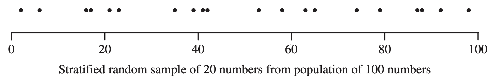
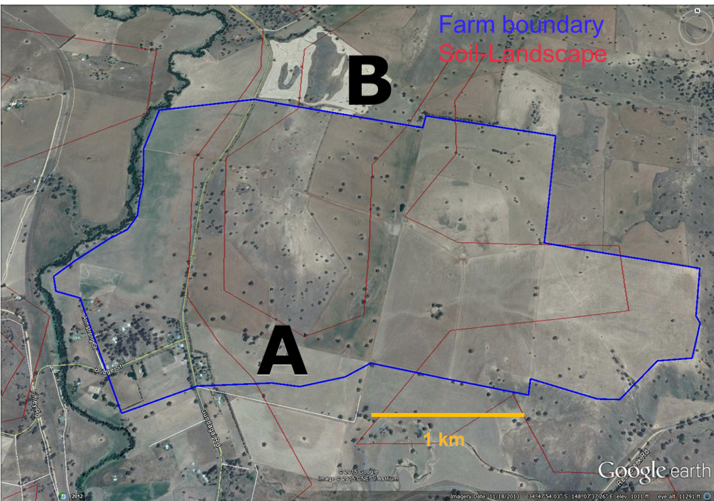

soil <- c(48, 56, 90, 78, 86, 71, 42)
soil[1] 48 56 90 78 86 71 42ENVX2001 Applied Statistical Methods
| Aspect | Observational study | Controlled experiment |
|---|---|---|
| Control | No control over the variables of interest - Mensurative and Absolute | Control over the variables of interest - Comparative and Manipulative |
| Causation | Cannot establish causation, but perhaps association | Can establish causation |
| Feasibility | Can be done in many cases | May be destructive and cannot always be done |


Random selection of finite or infinite population units.
What does random mean?
Within a population, all units have a > 0 probability of being selected i.e. everything has a chance to be selected.
sample() function.
In general, a CI has the form: \[\text{estimate} \pm \text{margin of error}\]
where the margin of error is a function of the standard error of the estimate:
\[\text{estimate} \pm (\text{critical value} \times \text{standard error (estimate)})\]
where the critical value is based on the sampling distribution of the estimate i.e. the \(t\)-distribution.
Imagine that we are fishing in a river and we want to catch a fish that we saw.
Analogy: The net is the confidence interval, and the fish is the true population parameter.

Soil carbon content was measured at 7 locations across the area. The amount at each location was 48, 56, 90, 78, 86, 71, 42 tonnes per hectare (t/ha).
We start with the sampled data:
soil <- c(48, 56, 90, 78, 86, 71, 42)
soil[1] 48 56 90 78 86 71 42What is the mean soil carbon content and how confident are we in this estimate?
\[95\%\ CI = \bar y \pm t^{0.025}_{n-1} \times SE(\bar y)\]
Recall: \[CI = \text{estimate} \pm \text{margin of error}\]
So: \[95\%\ CI = \text{sample mean} \pm \text{t-critical value} \times \text{standard error of the mean}\]
We need to calculate each of these components:
① Sample mean \(\bar y\); ⓶ Critical value \(t^{0.025}_{n-1}\); and ③ Standard error of the mean \(SE(\bar y)\)
\[\bar y = \frac{1}{n} \times \sum_{i = 1}^{n}y_i\]
The sum of all sampled values, divided by the number of samples.
Relatively straightforward to calculate.
mean_soil <- mean(soil)
mean_soil[1] 67.28571The \(t\)-distribution is a family of distributions indexed by a parameter called degrees of freedom.
n - 1. For a sample size n, the last sample isn’t independent – it must satisfy the mean.We refer to the \(t\)-distribution table to find the critical value for a given confidence level and degrees of freedom. These days, we can use the qt() function in R. For a 95% confidence level, we use the 0.975 quantile since the \(t\)-distribution is symmetric.
t_critical <- qt(0.975, df = length(soil) - 1)
t_critical[1] 2.446912The variance of the mean, \(var(\bar y)\), is: \[var(\bar y) = \frac{var(y)}{n}\]
Variance is standard deviation squared (\(s^2\)), so the formula is: \[var(\bar y) = \frac{s^2(y)}{n}\]
Since \(SE = \frac{s}{\sqrt{n}}\), then the standard error of the mean, \(SE(\bar y)\), is: \[SE(\bar y) = \frac{s(y)}{\sqrt{n}} = \frac{\sqrt{s^2(y)}}{\sqrt{n}} = \sqrt{var(\bar y)}\]

step 1 calculate the variance \(var(y)\) of the sampled values.
step 2 divide \(var(y)\) by the number of samples (\(n\)) to obtain variance of the mean \(var{(\bar y)}\).
step 3 take the square root of \(var{(\bar y)}\) to obtain the standard error of the mean \(\sqrt{var{(\bar{y})}} = SE(\bar y)\).
In R, we can calculate the standard error of the mean using the var() or sd() function and the number of samples.
# step 1
var_soil <- var(soil)
# step 2
var_mean <- var_soil / length(soil)
# step 3
se_mean <- sqrt(var_mean)
se_mean[1] 7.127126se_mean <- sd(soil) / sqrt(length(soil))
se_mean[1] 7.127126So far we have:
mean_soil <- mean(soil)
t_critical <- qt(0.975, df = length(soil) - 1)
se_mean <- sqrt(var_soil / length(soil))Now we can calculate the confidence interval:
margin_error <- t_critical * se_mean
ci95 <- c(mean = mean_soil,
L95 = mean_soil - margin_error,
U95 = mean_soil + margin_error)
ci95 mean L95 U95
67.28571 49.84627 84.72516 This presentation is based on the SOLES Quarto reveal.js template and is licensed under a Creative Commons Attribution 4.0 International License